Dành cho người không chuyên về công nghệ: cài một lần, bấm đúp một tệp là web chạy hoàn chỉnh trên máy của bạn. Kèm kịch bản từng cảnh để quay video giới thiệu sản phẩm.
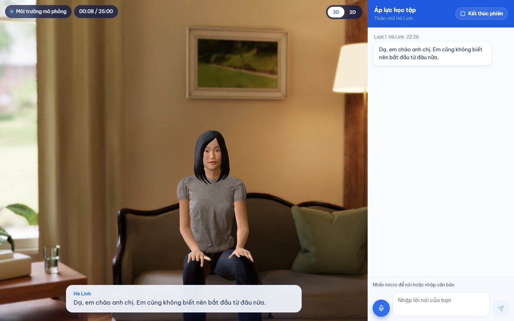
Phòng thực hành tham vấn ảoPhiên bản demo · 15/11/2026
Nội dung
1Lab FourT là gì và bạn sẽ làm gì với tài liệu này
2Chuẩn bị máy tính (làm một lần duy nhất)
3Chạy web bằng một lần bấm đúp
4Tắt web, chạy lại và làm sạch dữ liệu
5Làm quen nhanh với ba vai trò
6Chuẩn bị trước khi quay video
7Kịch bản quay video demo, từng cảnh
8Khi gặp lỗi
9Phụ lục: bảng tài khoản, câu thoại mẫu, dùng trên máy Mac
Tóm tắt trong 30 giây
Cài Docker Desktop (mục 2, chỉ làm một lần).
Giải nén tệp LabFourT-demo.zip.
Bấm đúp CHAY-DEMO.bat, chờ đến khi cửa sổ báo XONG. Trình duyệt tự mở web.
Đăng nhập bằng tài khoản ở mục 3.4 và làm theo kịch bản ở mục 7.
Dùng xong, bấm đúp DUNG-DEMO.bat để tắt.
1. Lab FourT là gì
Lab FourT là website giúp sinh viên ngành tâm lý luyện kỹ năng tham vấn. Sinh viên bước vào một căn phòng 3D, trò chuyện với một thân chủ do AI đóng vai bằng cách gõ chữ hoặc nói qua micro. Thân chủ trả lời bằng chữ trên màn hình và thay đổi tư thế, cảm xúc theo cuộc trò chuyện. Kết thúc phiên, hệ thống tạo báo cáo đánh giá sáu nhóm kỹ năng, mỗi nhận xét đều dẫn lại đúng câu sinh viên đã nói.
Web có ba vai trò:
Vai trò
Làm được gì
Sinh viên
Chọn ca thực hành, trò chuyện với thân chủ AI trong phòng 3D, xem báo cáo, viết phản tư và nộp bài cho giảng viên.
Giảng viên
Soạn ca mô phỏng, giao bài cho lớp, theo dõi tiến độ, đọc lại hội thoại, chấm và nhận xét bài của sinh viên, xem thống kê kỹ năng của lớp.
Quản trị viên
Quản lý tài khoản và lớp, quản lý dữ liệu phiên, cấu hình hệ thống, xem trạng thái và nhật ký thao tác.
Bạn sẽ làm gì với tài liệu này
Mục 2 đến 4: đưa web lên chạy trên máy của bạn. Không cần biết lập trình, chỉ cần làm đúng thứ tự.
Mục 5: đi một vòng để quen giao diện.
Mục 6 và 7: chuẩn bị và quay video demo theo kịch bản từng cảnh (khoảng 10 đến 12 phút).
Mục 8: tra cứu khi có gì đó không chạy như mong đợi.
Về thân chủ AI trong bản demo
Bản demo dùng chế độ AI chạy ngay trên máy của bạn, không cần Internet và không tốn phí. Thân chủ trả lời theo hồ sơ từng ca và theo cách bạn hỏi (ví dụ hỏi về cảm xúc thì thân chủ mở lòng hơn). Câu trả lời ngắn và có phần lặp lại so với AI thật. Kịch bản ở mục 7 đã chọn sẵn các câu hỏi cho ra câu trả lời đẹp nhất.
2. Chuẩn bị máy tính (làm một lần)
2.1 Máy cần có
Yêu cầu
Chi tiết
Hệ điều hành
Windows 10 hoặc Windows 11, bản 64-bit. (Máy Mac xem phụ lục 9.3.)
Bộ nhớ (RAM)
Tối thiểu 8 GB, nên có 16 GB để quay video mượt.
Ổ đĩa trống
Ít nhất 10 GB.
Internet
Cần ở lần chạy đầu tiên để tải khoảng 1 GB. Những lần sau chạy không cần mạng.
Trình duyệt
Google Chrome hoặc Microsoft Edge bản mới.
Quyền trên máy
Cần quyền quản trị (Administrator) chỉ khi cài Docker Desktop.
2.2 Cài Docker Desktop
Docker Desktop là phần mềm miễn phí giúp chạy toàn bộ web trong một "hộp" riêng trên máy, bạn không phải cài từng thứ một.
Mở trình duyệt, vào trang docker.com/products/docker-desktop, bấm Download for Windows. (Nếu bạn chạy CHAY-DEMO.bat khi chưa cài Docker, trang này cũng tự mở.)
Mở tệp vừa tải (tên dạng Docker Desktop Installer.exe). Nếu Windows hỏi "Cho phép ứng dụng thay đổi thiết bị?", bấm Yes.
Ở màn hình cấu hình, giữ nguyên các lựa chọn mặc định (có dấu tích "Use WSL 2") rồi bấm OK. Chờ cài xong, bấm Close and restart để khởi động lại máy.
Sau khi máy bật lại, Docker Desktop tự mở. Bấm Accept ở điều khoản sử dụng. Nếu được mời đăng nhập hoặc khảo sát, bấm Skip. Không cần tài khoản Docker.
Nếu Docker báo cần cập nhật WSL, làm theo hướng dẫn trên màn hình (thường là bấm nút cập nhật hoặc chạy lệnh được gợi ý), rồi mở lại Docker Desktop.
Chờ đến khi góc dưới bên trái của Docker Desktop hiện chữ Engine running màu xanh. Vậy là xong.
Lưu ý
Mỗi lần muốn chạy demo, Docker Desktop cần đang mở (biểu tượng cá voi ở khay đồng hồ). Bạn không cần tự mở: CHAY-DEMO.bat sẽ tự mở Docker Desktop nếu nó đang tắt.
2.3 Giải nén gói demo
Chép tệp LabFourT-demo.zip vào một thư mục dễ tìm, ví dụ D:\ hoặc màn hình Desktop.
Bấm chuột phải vào tệp, chọn Extract All… (Giải nén tất cả), rồi bấm Extract.
Mở thư mục LabFourT-demo vừa tạo. Bạn sẽ thấy các tệp CHAY-DEMO.bat, DUNG-DEMO.bat, XOA-DU-LIEU-DEMO.bat và tài liệu này.
Đừng chạy ngay bên trong tệp zip
Nếu bấm đúp vào zip rồi bấm đúp CHAY-DEMO.bat ngay trong đó, Windows chỉ giải nén tạm một tệp và web sẽ không chạy được. Luôn giải nén ra thư mục trước. Nên đặt thư mục ở đường dẫn ngắn, không nằm trong OneDrive.
3. Chạy web bằng một lần bấm đúp
3.1 Bấm đúp CHAY-DEMO.bat
Trong thư mục LabFourT-demo, bấm đúp tệp CHAY-DEMO.bat. Một cửa sổ chữ màu đen hiện ra và tự làm 6 bước:
Bước
Màn hình hiện
Ý nghĩa
1/6
Kiểm tra Docker Desktop
Mở Docker Desktop nếu đang tắt (có thể chờ 1 đến 2 phút).
2/6
Kiểm tra cổng 80
Đảm bảo không có chương trình khác chiếm địa chỉ http://localhost.
3/6
Chuẩn bị cấu hình
Tự tạo cấu hình ở lần đầu. Bạn không phải sửa gì.
4/6
Build và khởi động web
Lâu nhất ở lần đầu: 5 đến 15 phút. Rất nhiều dòng chữ chạy qua là bình thường.
5/6
Chờ web sẵn sàng và nạp dữ liệu demo
Tạo sẵn tài khoản, lớp học và 3 ca thực hành mẫu.
6/6
Mở web
Trình duyệt tự mở trang http://localhost.
Khi thấy dòng chữ xanh XONG! Web đang chạy tại http://localhost là web đã sẵn sàng. Bấm phím bất kỳ để đóng cửa sổ đen. Web vẫn tiếp tục chạy.
Nếu Windows hiện "Windows protected your PC" (Windows đã bảo vệ máy tính)
Đây là cảnh báo chung cho tệp tải về, không phải virus. Bấm More info (Thông tin thêm) rồi bấm Run anyway (Vẫn chạy). Chỉ cần làm một lần.
Những lần sau
Chạy lại CHAY-DEMO.bat chỉ mất khoảng 1 phút. Dữ liệu bạn đã tạo (bài giao, phiên thực hành, báo cáo) vẫn còn nguyên.
3.2 Mở web
Nếu trình duyệt không tự mở, hãy mở Chrome hoặc Edge và gõ vào thanh địa chỉ: localhost rồi bấm Enter. Nên dùng đúng chữ localhost, không dùng địa chỉ IP.
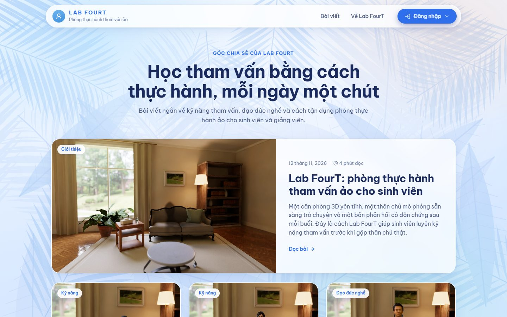
Trang đầu tiên: trang bài viết công khai, ai cũng xem được
3.3 Đăng nhập
Bấm nút Đăng nhập ở góc trên bên phải, chọn vai trò, rồi nhập tên đăng nhập và mật khẩu.
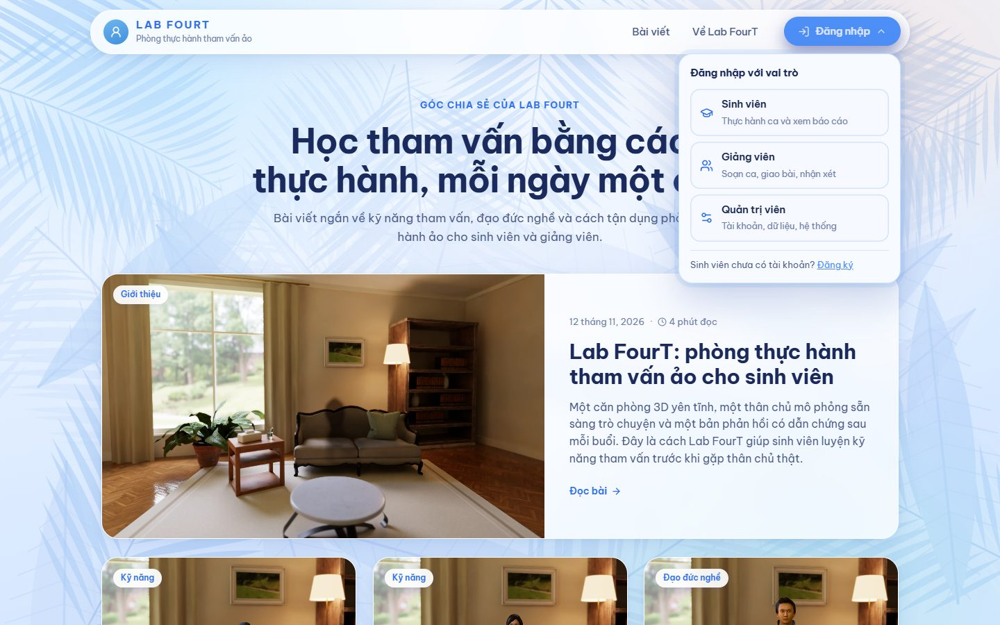
Chọn vai trò đăng nhập
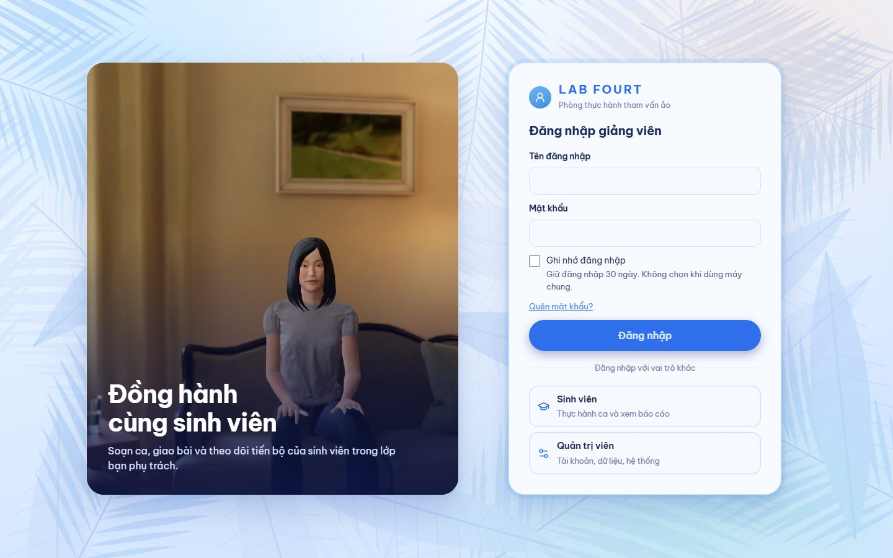
Trang đăng nhập của giảng viên
3.4 Tài khoản demo
Vai trò
Tên đăng nhập
Mật khẩu
Tên hiển thị
Sinh viên
sinhvien1
LabFourT2026
Trần Minh Anh
Sinh viên
sinhvien2
LabFourT2026
Lê Hoàng Nam
Giảng viên
giangvien
LabFourT2026
Nguyễn Thu Trang
Quản trị viên
admin
LabFourTAdmin2026
Quản trị viên
Mật khẩu phân biệt chữ hoa, chữ thường. Đây là tài khoản của bản demo trên máy bạn, không dùng ở nơi khác.
4. Tắt web, chạy lại và làm sạch dữ liệu
Bạn muốn
Bấm đúp tệp
Kết quả
Tắt web khi dùng xong
DUNG-DEMO.bat
Web tắt, máy nhẹ lại. Dữ liệu vẫn được giữ.
Chạy lại
CHAY-DEMO.bat
Web lên lại trong khoảng 1 phút, dữ liệu cũ còn nguyên.
Xóa sạch để quay lại từ đầu
XOA-DU-LIEU-DEMO.bat rồi CHAY-DEMO.bat
Xóa mọi bài giao, phiên, báo cáo đã tạo. Lần chạy tiếp theo có lại dữ liệu mẫu ban đầu.
Khi bấm XOA-DU-LIEU-DEMO.bat, cửa sổ sẽ hỏi lại cho chắc chắn. Gõ XOA (chữ in hoa) rồi bấm Enter. Bấm Enter luôn mà không gõ gì thì thao tác bị hủy.
Mẹo khi quay video
Trước mỗi lần quay, chạy XOA-DU-LIEU-DEMO.bat rồi CHAY-DEMO.bat. Màn hình sẽ sạch, không có bài giao hay phiên cũ của lần quay thử, mọi bước trong kịch bản diễn ra đúng như mô tả.
Tắt máy tính mà quên tắt web?
Không sao. Lần sau bật máy, chỉ cần chạy lại CHAY-DEMO.bat.
5. Làm quen nhanh với ba vai trò
Mỗi vai trò có một cột menu bên trái. Bấm vào mục trong menu để chuyển trang. Mục Trang bài viết ở cuối menu đưa bạn về trang công khai. Biểu tượng mũi tên cạnh tên ở góc dưới trái là nút Đăng xuất.
5.1 Sinh viên
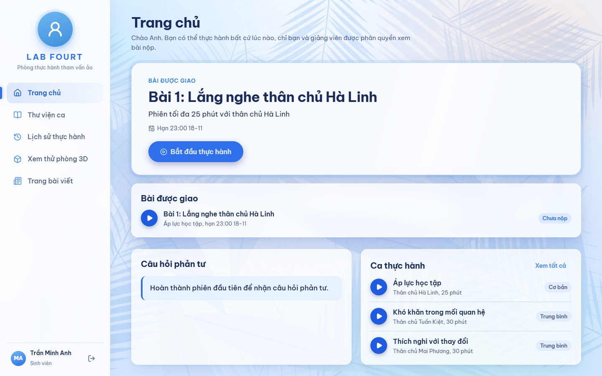
Trang chủ: bài được giao, gợi ý thực hành, phiên đang dở
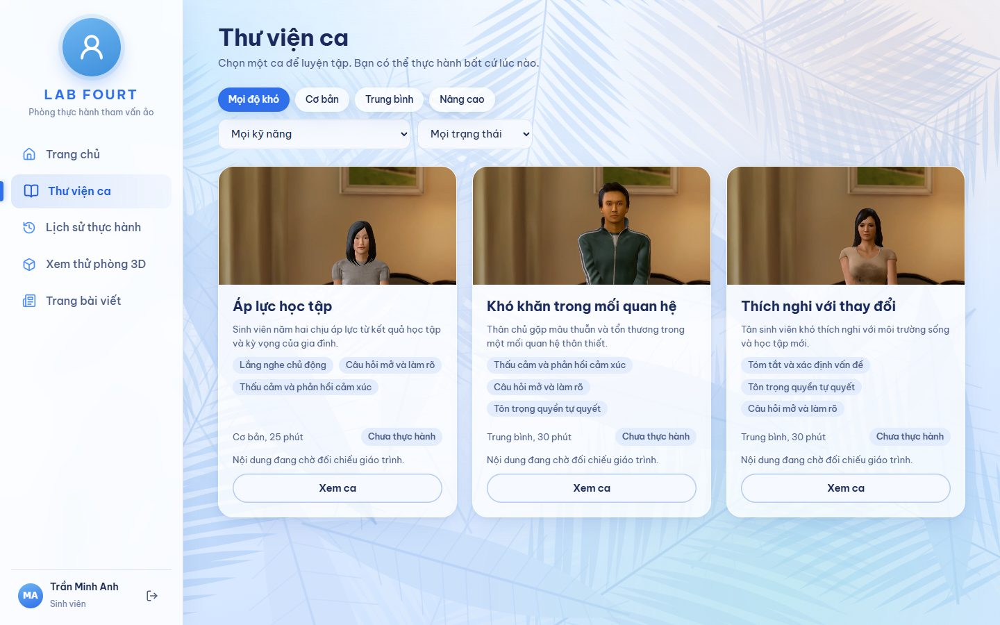
Thư viện ca: lọc theo độ khó, kỹ năng, trạng tháiPhòng tham vấn: thân chủ 3D bên trái, hội thoại bên phải
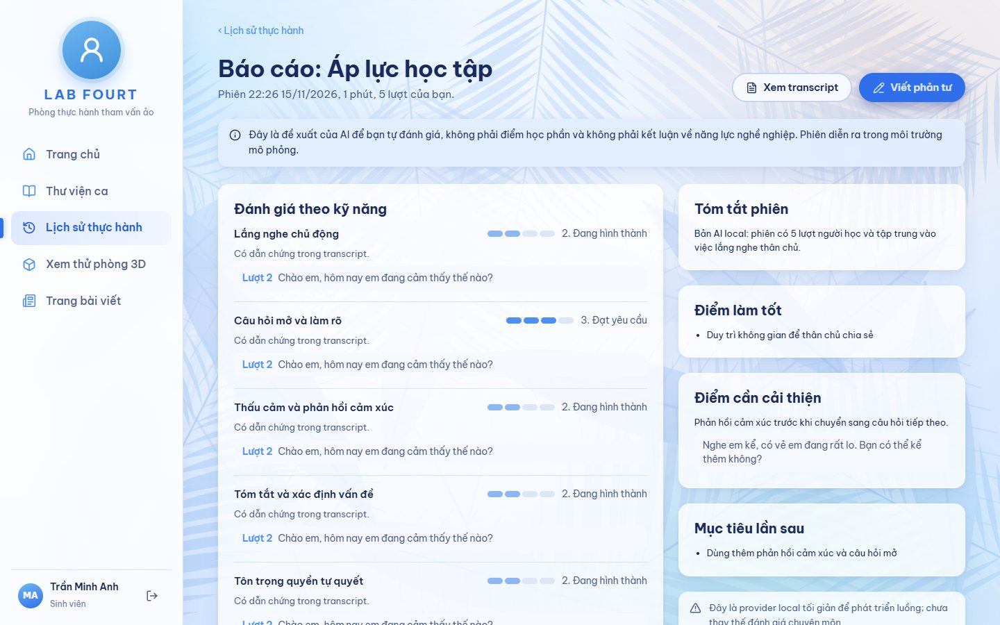
Báo cáo sau phiên với dẫn chứng từng kỹ năng
5.2 Giảng viên
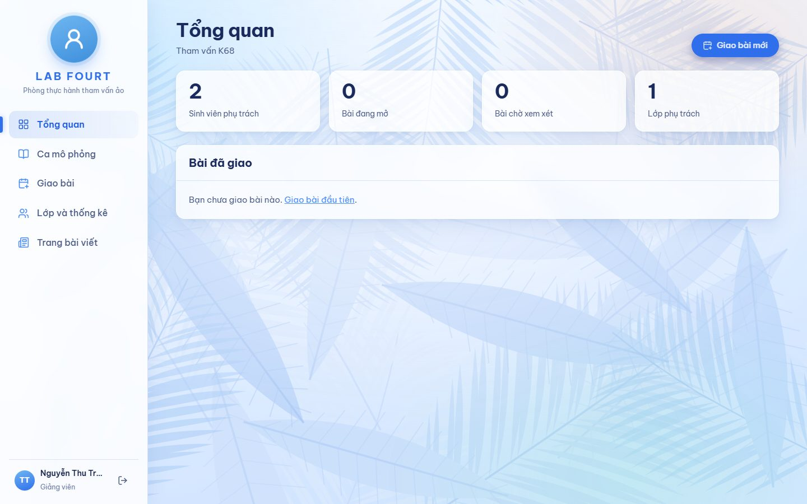
Tổng quan: số liệu nhanh và các bài đã giao
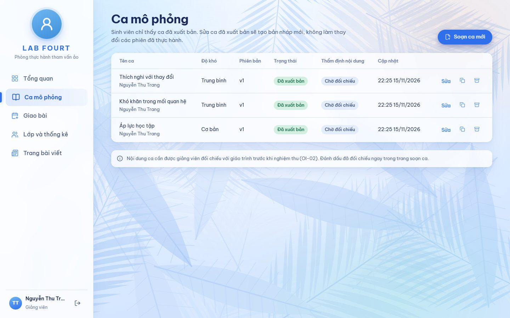
Ca mô phỏng: danh sách ca, phiên bản, trạng thái duyệt
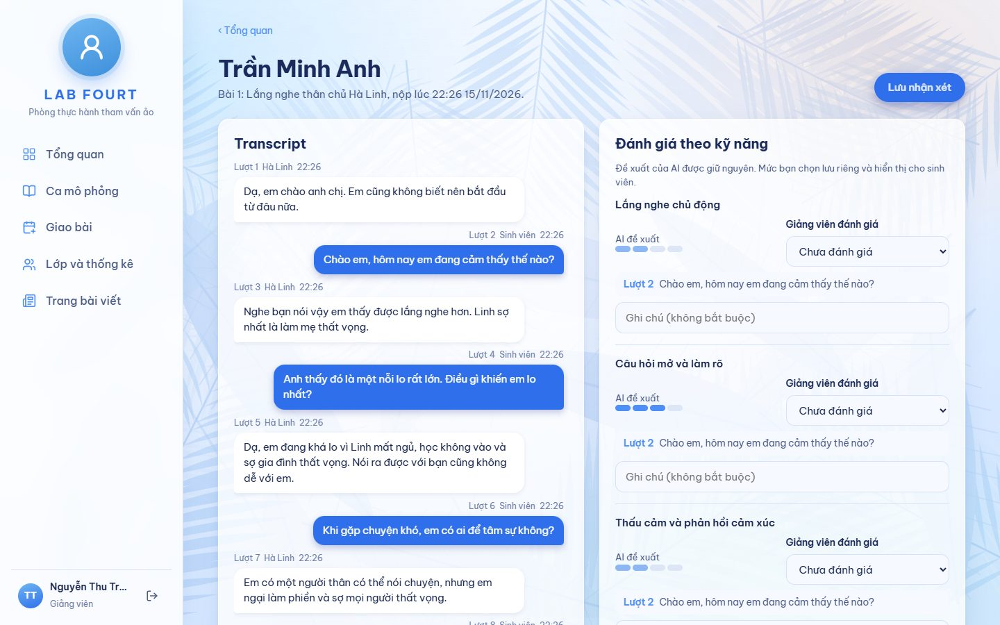
Xem bài nộp: hội thoại, đánh giá của AI, ô đánh giá của giảng viên
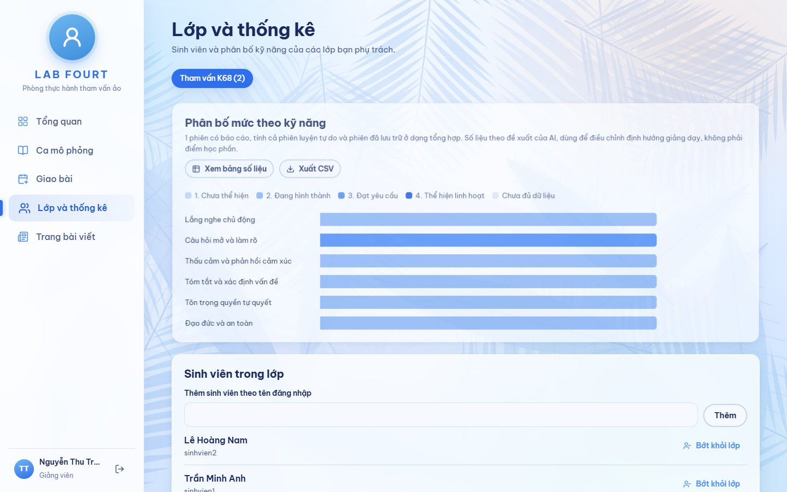
Lớp và thống kê: phân bố kỹ năng của lớp
5.3 Quản trị viên
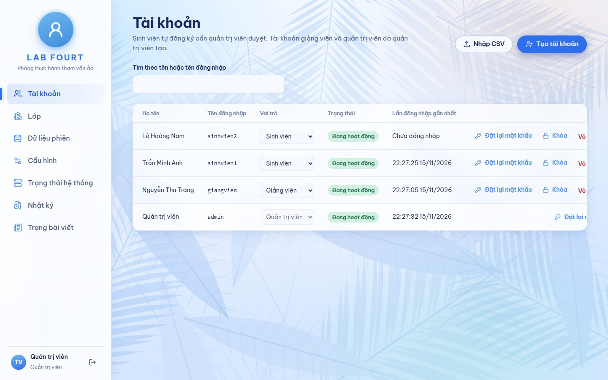
Tài khoản: tạo, nhập từ CSV, khóa, đặt lại mật khẩu
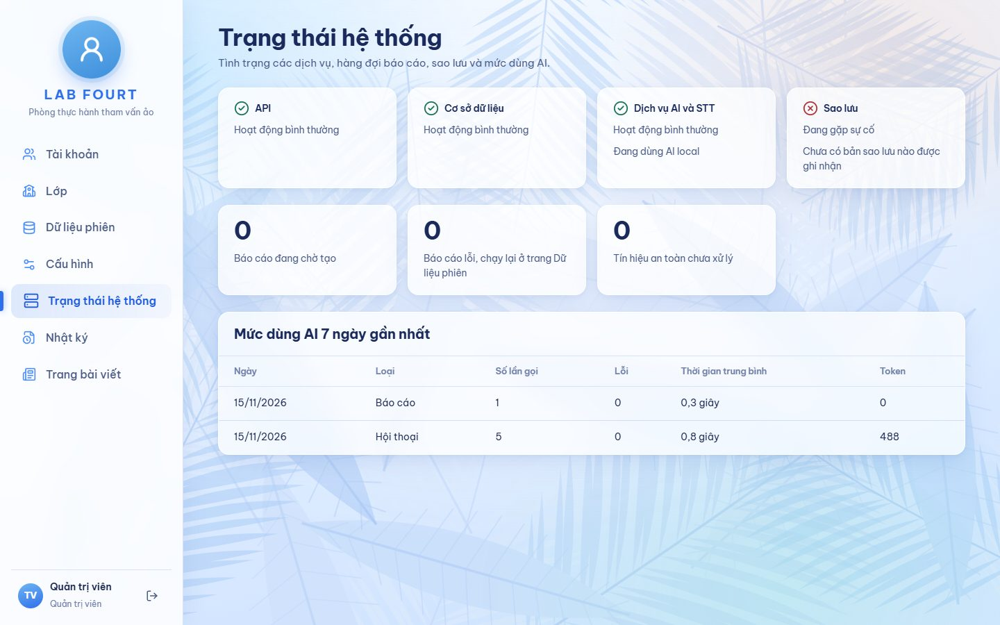
Trạng thái hệ thống: dịch vụ AI, cơ sở dữ liệu, sao lưu
6. Chuẩn bị trước khi quay video
6.1 Danh sách kiểm tra
✓
Việc cần làm
☐
Chạy XOA-DU-LIEU-DEMO.bat rồi CHAY-DEMO.bat để có dữ liệu sạch (mục 4).
☐
Cắm sạc laptop, tắt các chương trình nặng khác (game, phần mềm đồ họa).
☐
Bật chế độ Không làm phiền (Do not disturb / Focus) của Windows để thông báo không hiện lên video.
☐
Dùng Chrome hoặc Edge, thu phóng 100% (bấm Ctrl + 0), ẩn thanh dấu trang (Ctrl + Shift + B).
☐
Màn hình nên ở độ phân giải 1920 × 1080. Có thể bấm F11 để trình duyệt toàn màn hình khi quay.
☐
Mở sẵn Notepad chứa các câu thoại ở phụ lục 9.2 để dán nhanh (hoặc gõ trực tiếp nếu muốn video tự nhiên hơn).
☐
Quay thử một lượt không thu tiếng để quen thao tác, sau đó làm sạch dữ liệu lại trước khi quay thật.
6.2 Công cụ quay màn hình (có sẵn trên Windows)
Windows 11: mở Snipping Tool (Công cụ Cắt), chọn biểu tượng máy quay Record, kéo chọn vùng màn hình rồi bấm Start. Bấm nút dừng để kết thúc, sau đó lưu video.
Windows 10 và 11: dùng Xbox Game Bar. Mở trình duyệt, bấm Win + Alt + R để bắt đầu và bấm lại để dừng. Video nằm trong thư mục Videos\Captures.
Muốn dựng video, cắt ghép, thêm nhạc và chữ: dùng Clipchamp có sẵn trên Windows 11.
Thu tiếng lời dẫn
Có hai cách: nói trực tiếp khi quay (bật micro trong công cụ quay), hoặc quay hình trước rồi thu lời dẫn sau trong Clipchamp. Cách thứ hai dễ hơn cho người mới vì không phải vừa thao tác vừa nói. Kịch bản ở mục 7 có sẵn lời dẫn gợi ý cho từng cảnh.
6.3 Chuyển giữa các vai trò khi quay
Kịch bản đổi vai giảng viên → sinh viên → giảng viên → quản trị viên. Cách đơn giản nhất: Đăng xuất (biểu tượng mũi tên ở góc dưới trái), rồi đăng nhập vai mới. Khi dựng video, bạn có thể cắt bỏ đoạn đăng xuất và đăng nhập cho gọn.
Không dùng micro trong bản demo
Ở bản demo, nút micro chỉ giả lập việc nhận dạng giọng nói: dù bạn nói gì, khung nhập cũng hiện cùng một câu mẫu. Khi quay, hãy gõ hoặc dán câu thoại. Có thể nói trong lời dẫn rằng "sinh viên cũng có thể nói qua micro".
7. Kịch bản quay video demo
Video kể một câu chuyện trọn vẹn: giảng viên giao bài → sinh viên thực hành với thân chủ AI → nhận báo cáo, phản tư, nộp bài → giảng viên chấm và nhận xét → quản trị viên giám sát hệ thống. Tổng thời lượng khoảng 10 đến 12 phút. Các cảnh có ghi "có thể bỏ" dùng khi cần video ngắn hơn (khoảng 6 phút).
Phần
Nội dung
Thời lượng
A
Mở đầu: trang công khai (cảnh 1)
0:30
B
Giảng viên chuẩn bị và giao bài (cảnh 2 đến 4)
2:00
C
Sinh viên thực hành trong phòng 3D (cảnh 5 đến 10)
4:30
D
Báo cáo, phản tư, nộp bài (cảnh 11 đến 13)
2:00
E
Giảng viên chấm bài, sinh viên nhận nhận xét (cảnh 14 đến 16)
2:00
F
Quản trị viên và kết thúc (cảnh 17, 18)
1:30
Ký hiệu trong mỗi cảnh: Thao tác là những gì bạn bấm hoặc gõ; Lời dẫn là câu gợi ý để đọc khi quay hoặc thu tiếng sau; ảnh bên phải là màn hình bạn sẽ thấy.
Phần A. Mở đầu
Cảnh 1
Trang công khai của Lab FourT
≈ 30 giây
Thao tác
Mở localhost (chưa đăng nhập).
Cuộn chuột chậm xuống để thấy các bài viết, rồi cuộn lại lên đầu.
Bấm nút Đăng nhập ở góc trên phải để hiện ba lựa chọn vai trò.
Lời dẫn
"Đây là Lab FourT, phòng thực hành tham vấn ảo dành cho sinh viên tâm lý. Trang công khai chia sẻ bài viết về kỹ năng tham vấn. Người dùng đăng nhập theo ba vai trò: sinh viên, giảng viên và quản trị viên."
Phần B. Giảng viên chuẩn bị và giao bài
Cảnh 2
Giảng viên đăng nhập, xem tổng quan
≈ 30 giây
Thao tác
Trong menu Đăng nhập, chọn Giảng viên.
Nhập giangvien / LabFourT2026, bấm Đăng nhập.
Dừng ở trang Tổng quan 3 đến 4 giây.
Lời dẫn
"Giảng viên đăng nhập và thấy ngay tổng quan: số sinh viên phụ trách, bài đang mở, bài chờ xem xét và các lớp mình dạy."
Cảnh 3
Thư viện ca mô phỏng
≈ 30 giây · có thể bỏ
Thao tác
Bấm Ca mô phỏng trong menu.
Rê chuột qua ba ca: Áp lực học tập, Khó khăn trong mối quan hệ, Thích nghi với thay đổi.
Lời dẫn
"Mỗi ca là một thân chủ với hồ sơ, bối cảnh và những điều chỉ chia sẻ khi được lắng nghe. Giảng viên có thể soạn ca mới, quản lý phiên bản và chờ thẩm định nội dung trước khi xuất bản cho sinh viên."
Cảnh 4
Giao bài cho lớp
≈ 60 giây
Thao tác
Bấm Giao bài trong menu.
Ô Ca mô phỏng: chọn Áp lực học tập (thân chủ Hà Linh).
Ô Tên bài: gõ Bài 1: Lắng nghe thân chủ Hà Linh.
Ô Hạn hoàn thành: bấm biểu tượng lịch, chọn một ngày sau hôm nay vài ngày.
Ở Giao cho lớp: tích ô Tham vấn K68.
Bấm nút xanh Giao bài. Trang chuyển sang tiến độ của bài vừa giao, hai sinh viên đều ở trạng thái Chưa bắt đầu.
Lời dẫn
"Giảng viên giao bài cho cả lớp chỉ trong vài giây: chọn ca, đặt tên, đặt hạn. Sinh viên nộp sau hạn vẫn được, nhưng bài sẽ được đánh dấu trễ."
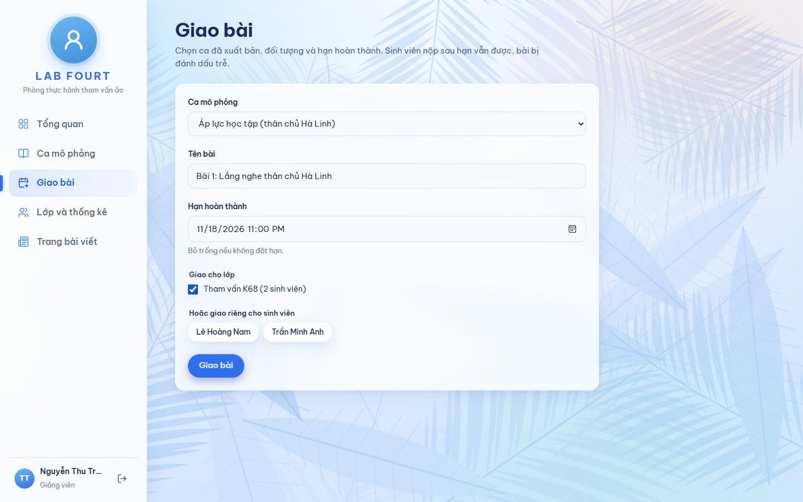
Phần C. Sinh viên thực hành trong phòng 3D
Cảnh 5
Sinh viên đăng nhập, thấy bài được giao
≈ 30 giây
Thao tác
Đăng xuất giảng viên (biểu tượng mũi tên ở góc dưới trái).
Đăng nhập vai Sinh viên: sinhvien1 / LabFourT2026.
Trang chủ hiện khối Bài được giao vừa tạo.
Lời dẫn
"Ở phía sinh viên, bài giảng viên vừa giao xuất hiện ngay trên trang chủ, kèm hạn hoàn thành và gợi ý thực hành."
Cảnh 6
Thư viện ca và bộ lọc
≈ 20 giây · có thể bỏ
Thao tác
Bấm Thư viện ca.
Bấm lần lượt các nút lọc Cơ bản, Trung bình để thấy danh sách đổi mượt, rồi bấm lại Mọi độ khó.
Bấm Trang chủ để quay về.
Lời dẫn
"Ngoài bài được giao, sinh viên có thể tự luyện bất cứ ca nào trong thư viện, lọc theo độ khó, kỹ năng và trạng thái."
Cảnh 7
Chuẩn bị ca và quy tắc mô phỏng
≈ 40 giây
Thao tác
Ở khối Bài được giao, bấm Bắt đầu thực hành.
Cuộn chậm qua Bối cảnh, Mục tiêu học tập và khung Trước khi bắt đầu.
Tích ô Tôi đã đọc và hiểu quy tắc mô phỏng.
Bấm Bắt đầu phiên.
Lời dẫn
"Trước mỗi phiên, sinh viên đọc bối cảnh của thân chủ, mục tiêu học tập và quy tắc mô phỏng. Đây là môi trường an toàn để tập, AI chỉ đóng vai thân chủ."
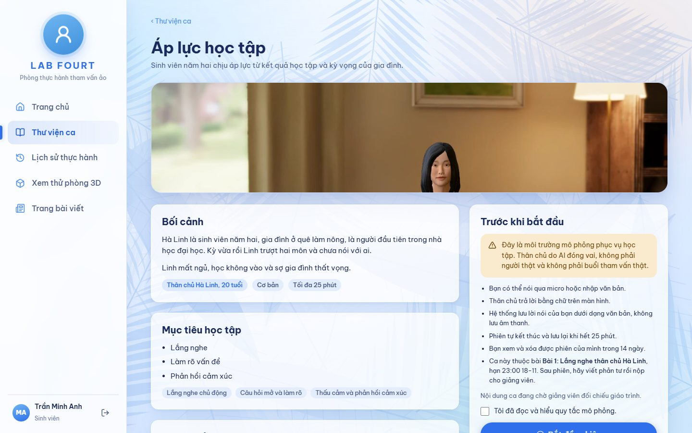
Cảnh 8
Bước vào phòng tham vấn 3D
≈ 40 giây
Thao tác
Lần đầu vào phòng sẽ có khung Làm quen với phòng tham vấn. Dừng 2 giây cho người xem đọc, rồi bấm Bắt đầu trò chuyện.
Chờ thân chủ Hà Linh hiện ra và nói câu mở đầu.
Nhấn giữ chuột trái trên căn phòng và kéo nhẹ sang trái, sang phải để xoay góc nhìn.
Lời dẫn
"Sinh viên bước vào một căn phòng tham vấn 3D. Thân chủ Hà Linh ngồi đối diện, thở, chớp mắt và thay đổi tư thế theo cảm xúc. Thân chủ mở lời trước, giống một buổi tham vấn thật."
Cảnh 9
Trò chuyện với thân chủ AI (5 lượt)
≈ 2 phút 30 giây
Thao tác
Lần lượt gõ (hoặc dán) từng câu dưới đây vào ô Nhập lời nói của bạn ở góc dưới bên phải, bấm nút Gửi (mũi tên) hoặc phím Enter. Chờ thân chủ trả lời xong (chữ chạy hết, ô nhập mở lại) rồi mới gửi câu tiếp. Mỗi lượt dừng 3 đến 4 giây để người xem đọc. Để ý nhân vật 3D đổi tư thế theo cảm xúc.
#
Sinh viên gõ
Thân chủ Hà Linh sẽ trả lời (gần đúng)
1
Chào em, hôm nay em đang cảm thấy thế nào?
Nghe bạn nói vậy em thấy được lắng nghe hơn. Linh sợ nhất là làm mẹ thất vọng.
2
Anh thấy đó là một nỗi lo rất lớn. Điều gì khiến em lo nhất?
Dạ, em đang khá lo vì Linh mất ngủ, học không vào và sợ gia đình thất vọng. Nói ra được với bạn cũng không dễ với em.
3
Khi gặp chuyện khó, em có ai để tâm sự không?
Em có một người thân có thể nói chuyện, nhưng em ngại làm phiền và sợ mọi người thất vọng.
4
Em nói em ngại làm phiền người thân. Em có thể kể thêm về điều đó không?
Em chưa biết phải trả lời thế nào. Có lẽ em cần thêm một chút thời gian để nói rõ điều mình đang trải qua.
5
Không sao đâu, em cứ từ từ. Anh vẫn ở đây với em.
Dạ, em nghe bạn nói. Em vẫn còn hơi khó diễn đạt, nhưng em muốn kể tiếp nếu bạn có thể lắng nghe.
Lời dẫn (đọc trong lúc trò chuyện)
"Sinh viên trò chuyện bằng cách gõ hoặc nói qua micro, thân chủ trả lời bằng chữ trên màn hình. Khi sinh viên hỏi về cảm xúc và thể hiện sự thấu cảm, thân chủ dần mở lòng, chia sẻ cả nỗi sợ làm mẹ thất vọng. Khi câu hỏi chưa chạm tới, thân chủ ngập ngừng, đúng như một thân chủ thật."
Nếu câu trả lời khác bảng trênThứ tự câu hỏi quyết định câu trả lời. Nếu bạn gửi nhầm câu hoặc đổi thứ tự, chỉ cần tiếp tục. Nếu muốn quay lại cảnh này cho đẹp, xem mục 8 dòng "Muốn quay lại một phiên từ đầu".
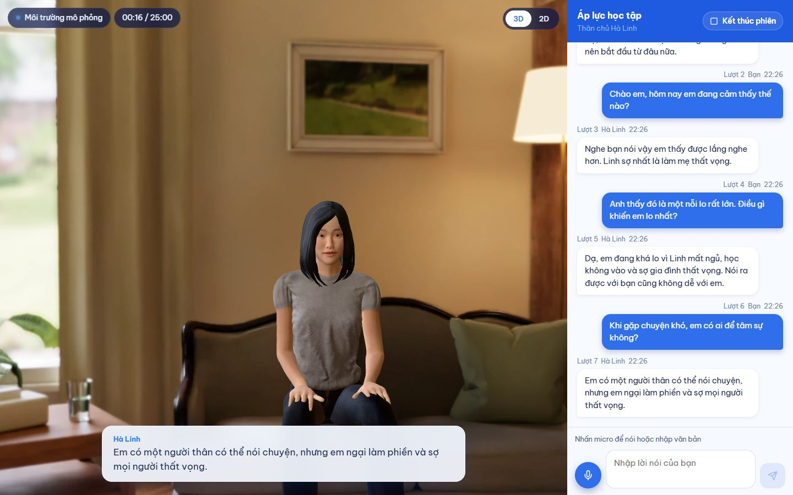
Sau lượt 3Sau lượt 5
Cảnh 10
Chế độ 2D cho máy yếu, rồi kết thúc phiên
≈ 30 giây
Thao tác
Bấm nút 2D ở góc trên bên phải của căn phòng. Căn phòng chuyển sang ảnh tĩnh nhẹ, hội thoại giữ nguyên.
Bấm 3D để quay lại.
Bấm Kết thúc phiên (nút góc trên của khung hội thoại). Khung xác nhận hiện ra, bấm Kết thúc phiên màu xanh.
Lời dẫn
"Máy cấu hình yếu có thể chuyển sang chế độ 2D bất cứ lúc nào mà không mất cuộc trò chuyện. Khi xong, sinh viên kết thúc phiên, hội thoại được lưu và báo cáo được tạo tự động."
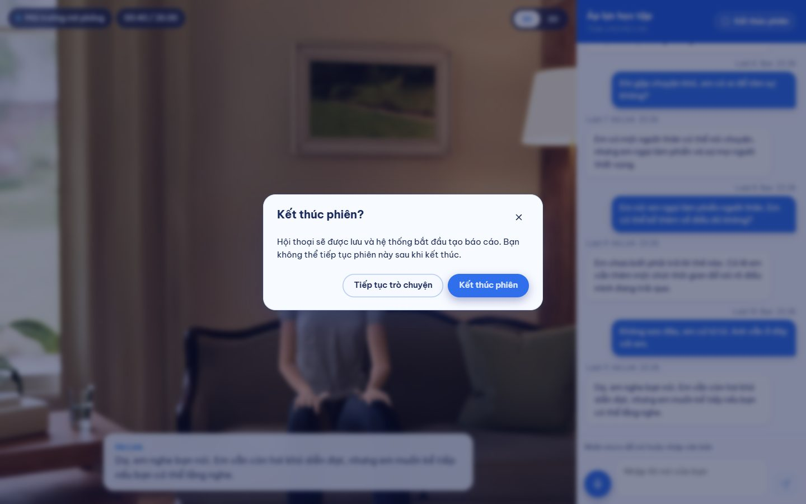
Phần D. Báo cáo, phản tư và nộp bài
Cảnh 11
Báo cáo sau phiên
≈ 60 giây
Thao tác
Trang tự chuyển sang Báo cáo. Nếu đang hiện "Đang tạo báo cáo", chờ vài giây.
Chỉ chuột vào khối Đánh giá theo kỹ năng: mỗi kỹ năng có mức đánh giá và câu dẫn chứng.
Cuộn qua Tóm tắt phiên, Điểm làm tốt, Điểm cần cải thiện, Mục tiêu lần sau.
Lời dẫn
"Ngay sau phiên, sinh viên nhận báo cáo sáu nhóm kỹ năng: lắng nghe, câu hỏi mở, phản hồi cảm xúc, tóm tắt, tôn trọng quyền tự quyết và đạo đức an toàn. Mỗi nhận xét đều dẫn lại đúng câu sinh viên đã nói, không phải lời khen chung chung."
Cảnh 12
Xem lại toàn bộ hội thoại
≈ 20 giây · có thể bỏ
Thao tác
Bấm nút Xem transcript ở góc trên của báo cáo.
Cuộn chậm qua hội thoại có đánh số lượt và thời gian.
Bấm ‹ Báo cáo ở góc trên trái để quay lại.
Lời dẫn
"Toàn bộ cuộc trò chuyện được lưu lại để sinh viên và giảng viên đọc lại từng lượt."
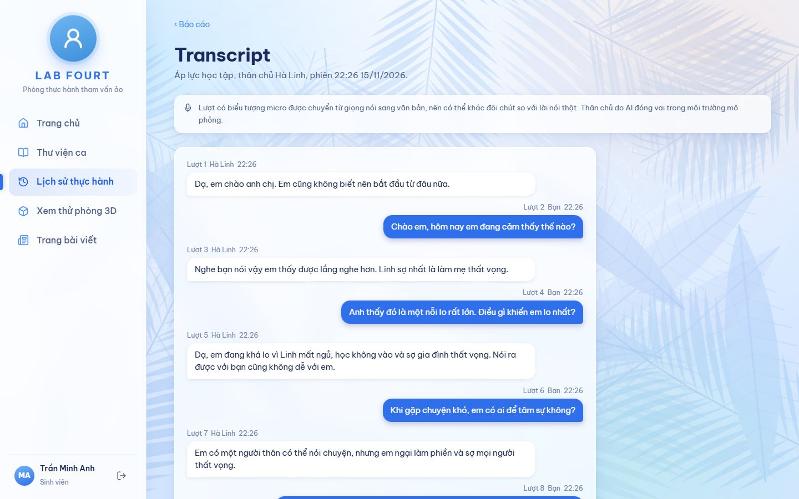
Cảnh 13
Viết phản tư và nộp bài
≈ 40 giây
Thao tác
Ở trang báo cáo, bấm Viết phản tư.
Câu 1 gõ: Em mở đầu tốt và dùng câu hỏi mở để thân chủ kể nhiều hơn.
Câu 2 gõ: Lần sau em sẽ phản hồi cảm xúc rõ hơn và tóm tắt lại ý của thân chủ.
Bấm Hoàn thành và nộp bài. Trang báo đã nộp cho giảng viên.
Lời dẫn
"Sinh viên tự phản tư về phiên của mình rồi nộp bài cho giảng viên chỉ bằng một nút bấm."
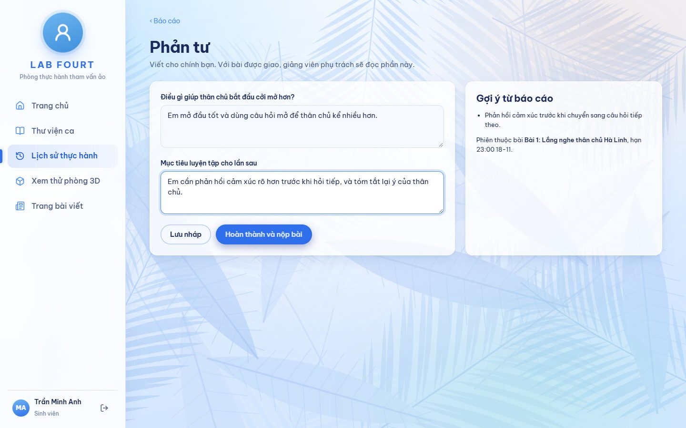
Phần E. Giảng viên chấm bài, sinh viên nhận nhận xét
Cảnh 14
Giảng viên theo dõi tiến độ
≈ 30 giây
Thao tác
Đăng xuất, đăng nhập lại vai Giảng viên.
Ở Tổng quan, bài vừa giao hiện Đã nộp 1/2 và Chờ xem xét 1. Bấm Xem tiến độ.
Sinh viên Trần Minh Anh ở trạng thái Đã nộp, bấm Xem xét.
Lời dẫn
"Giảng viên thấy ngay ai đã nộp, ai chưa bắt đầu, nộp đúng hạn hay trễ hạn, và có thể xuất danh sách ra tệp CSV."
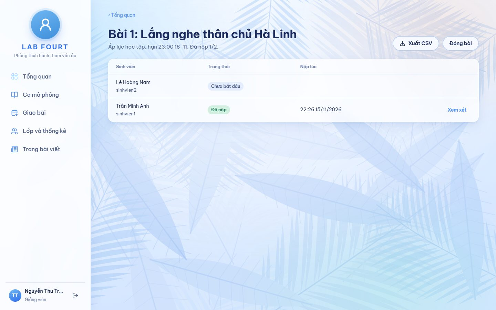
Cảnh 15
Chấm điểm và nhận xét
≈ 60 giây
Thao tác
Bên trái là hội thoại, bên phải là đánh giá theo kỹ năng. Bấm vào một câu dẫn chứng để thấy hội thoại nhảy tới đúng lượt đó.
Ở vài kỹ năng, mở ô Giảng viên đánh giá và chọn một mức.
Cuộn xuống ô Nhận xét chung, gõ: Em mở đầu tự nhiên và hỏi đúng cảm xúc của thân chủ. Lần sau hãy tóm tắt lại ý chính trước khi kết thúc.
Bấm Lưu nhận xét ở góc trên phải.
Lời dẫn
"AI chỉ đề xuất, giảng viên mới là người quyết định. Đánh giá của giảng viên được lưu riêng, không ghi đè lên đánh giá của AI."
Cảnh 16
Thống kê lớp, sinh viên nhận nhận xét
≈ 30 giây · có thể bỏ
Thao tác
Bấm Lớp và thống kê để xem phân bố kỹ năng của lớp.
(Tùy chọn) Đăng nhập lại sinhvien1, vào Lịch sử thực hành, mở phiên vừa làm để thấy khối Nhận xét của giảng viên.
Lời dẫn
"Giảng viên nhìn được bức tranh kỹ năng của cả lớp để điều chỉnh bài giảng. Sinh viên nhận được nhận xét ngay trong báo cáo của mình."
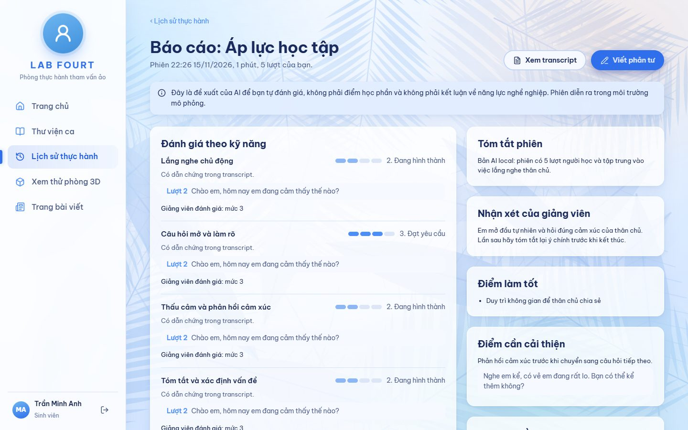
Phần F. Quản trị viên và kết thúc
Cảnh 17
Quản trị hệ thống
≈ 60 giây
Thao tác
Đăng xuất, đăng nhập vai Quản trị viên: admin / LabFourTAdmin2026.
Tài khoản: danh sách người dùng, nút Tạo tài khoản và Nhập CSV.
Lần lượt bấm Lớp, Dữ liệu phiên, Cấu hình, Trạng thái hệ thống, Nhật ký, mỗi trang dừng 3 đến 5 giây.
Lời dẫn
"Quản trị viên quản lý tài khoản và lớp, cấu hình thời hạn lưu dữ liệu. Dữ liệu cũ không bị xóa vĩnh viễn mà chuyển trạng thái. Mọi thao tác quan trọng đều được ghi nhật ký, và trang trạng thái cho biết các dịch vụ có đang chạy tốt hay không."
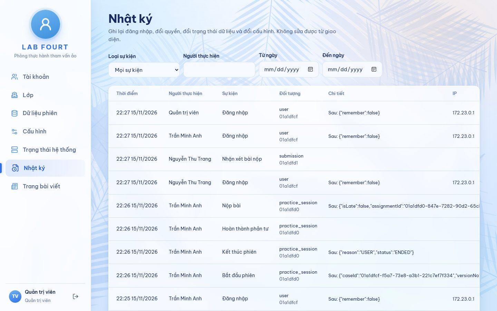
Cảnh 18
Kết thúc video
≈ 15 giây
Thao tác
Bấm Trang bài viết ở cuối menu để quay về trang công khai.
Dừng hình 3 giây ở phần đầu trang.
Lời dẫn
"Lab FourT: một căn phòng để luyện lắng nghe. Sinh viên được thực hành an toàn, nhận phản hồi có dẫn chứng; giảng viên theo dõi và đồng hành cùng từng sinh viên."
8. Khi gặp lỗi
Hầu hết sự cố được giải quyết bằng cách chạy lại CHAY-DEMO.bat. Cửa sổ đen luôn ghi rõ CHƯA CHẠY ĐƯỢC kèm Cách xử lý bằng chữ vàng.
Hiện tượng
Cách xử lý
"Máy chưa cài Docker Desktop"
Cài Docker Desktop theo mục 2.2, khởi động lại máy, rồi chạy lại CHAY-DEMO.bat.
"Docker Desktop mở quá lâu" hoặc "chưa chạy"
Mở Docker Desktop từ menu Start. Nếu có hộp thoại điều khoản, bấm Accept. Nếu báo cập nhật WSL, làm theo hướng dẫn trên màn hình. Chờ "Engine running" rồi chạy lại.
Docker báo lỗi về WSL hoặc Virtualization (ảo hóa)
Máy cần bật ảo hóa trong BIOS. Việc này cần người hiểu máy tính hỗ trợ một lần. Sau đó mọi thứ chạy bình thường.
"Cổng 80 đang bị chương trình … dùng"
Tắt chương trình được nêu tên (thường là Skype, IIS, XAMPP, một web khác chạy trong Docker), rồi chạy lại. Nếu là ứng dụng Docker khác: mở Docker Desktop → Containers → bấm nút Stop ở ứng dụng đó.
"Build hoặc khởi động không thành công"
Kiểm tra Internet (lần đầu cần tải khoảng 1 GB) và ổ đĩa còn trống ít nhất 10 GB. Chạy lại. Mạng chậm có thể mất tới 20 phút.
"Web chưa phản hồi sau 5 phút"
Chạy DUNG-DEMO.bat rồi CHAY-DEMO.bat. Nếu vẫn lỗi, khởi động lại máy rồi thử lại.
Cửa sổ đen hiện rồi tắt ngay
Bạn có thể đang chạy bên trong tệp zip. Giải nén ra thư mục trước (mục 2.3).
Trình duyệt báo "Không thể truy cập trang web"
Kiểm tra cửa sổ đen đã báo XONG chưa. Gõ đúng localhost (không có "www", không thêm "https"). Đợi 30 giây rồi bấm F5.
Trình duyệt tự đổi sang https://localhost và báo lỗi
Gõ đầy đủ http://localhost. Nếu vẫn bị đổi, mở cửa sổ ẩn danh (Ctrl + Shift + N) và vào lại.
Đăng nhập báo sai mật khẩu
Kiểm tra chữ hoa, chữ thường và đúng trang vai trò (giảng viên đăng nhập ở trang Giảng viên). Xem bảng tài khoản ở mục 3.4.
Phòng 3D giật, hiện cảnh báo "Phòng 3D đang chạy chậm"
Đóng bớt chương trình khác, cắm sạc. Hoặc bấm 2D trong phòng: hội thoại và báo cáo vẫn đầy đủ.
Báo cáo hiện "Đang tạo" mãi
Chờ khoảng 30 giây và tải lại trang (F5). Nếu vẫn vậy, chạy lại CHAY-DEMO.bat, báo cáo sẽ được tạo tiếp.
Trang chủ sinh viên không có nút "Bắt đầu thực hành" ở bài được giao
Sinh viên còn một phiên chưa kết thúc. Bấm Quay lại phiên để kết thúc phiên đó trước.
Muốn quay lại một phiên từ đầu
Kết thúc phiên đang làm, rồi vào Thư viện ca chọn lại ca đó để mở phiên mới. Muốn mọi thứ sạch như ban đầu: chạy XOA-DU-LIEU-DEMO.bat rồi CHAY-DEMO.bat.
Máy chậm sau khi dùng xong
Chạy DUNG-DEMO.bat. Có thể thoát hẳn Docker Desktop (chuột phải biểu tượng cá voi → Quit Docker Desktop).
Khi cần nhờ người hỗ trợ
Chụp màn hình cửa sổ đen (phím Win + Shift + S) ở chỗ có chữ đỏ CHƯA CHẠY ĐƯỢC và gửi cho người bàn giao gói demo.
9. Phụ lục
9.1 Tài khoản demo
Vai trò
Tên đăng nhập
Mật khẩu
Trang đăng nhập
Sinh viên
sinhvien1
LabFourT2026
Đăng nhập → Sinh viên
Sinh viên
sinhvien2
LabFourT2026
Đăng nhập → Sinh viên
Giảng viên
giangvien
LabFourT2026
Đăng nhập → Giảng viên
Quản trị viên
admin
LabFourTAdmin2026
Đăng nhập → Quản trị viên
9.2 Câu thoại để chép nhanh
Mở Notepad, chép sẵn các dòng dưới đây. Khi quay, bôi đen một dòng, Ctrl + C, rồi bấm vào ô nhập trong web và Ctrl + V.
Giao bài (cảnh 4) Bài 1: Lắng nghe thân chủ Hà Linh
Trò chuyện (cảnh 9), gửi đúng thứ tự
1. Chào em, hôm nay em đang cảm thấy thế nào?
2. Anh thấy đó là một nỗi lo rất lớn. Điều gì khiến em lo nhất?
3. Khi gặp chuyện khó, em có ai để tâm sự không?
4. Em nói em ngại làm phiền người thân. Em có thể kể thêm về điều đó không?
5. Không sao đâu, em cứ từ từ. Anh vẫn ở đây với em.
Phản tư (cảnh 13)
Em mở đầu tốt và dùng câu hỏi mở để thân chủ kể nhiều hơn.
Lần sau em sẽ phản hồi cảm xúc rõ hơn và tóm tắt lại ý của thân chủ.
Nhận xét của giảng viên (cảnh 15)
Em mở đầu tự nhiên và hỏi đúng cảm xúc của thân chủ. Lần sau hãy tóm tắt lại ý chính trước khi kết thúc.
Gợi ý khi muốn tự nghĩ câu thoại
Thân chủ AI của bản demo mở lòng khi câu của bạn có từ về cảm xúc (cảm thấy, cảm xúc, lo nhất, sợ nhất, trong lòng) hoặc thấu cảm (nghe, hiểu, khó khăn, vất vả, lo lắng, buồn, mệt). Hỏi về ai, bạn bè, gia đình, giúp đỡ thì thân chủ nói về người hỗ trợ. Câu hỏi không có những từ này làm thân chủ ngập ngừng.
9.3 Chạy trên máy Mac
Cài Docker Desktop for Mac (chọn đúng loại chip Apple hoặc Intel) từ docker.com/products/docker-desktop, mở lên và chờ "Engine running".
Giải nén LabFourT-demo.zip (bấm đúp vào tệp).
Mở ứng dụng Terminal, gõ cd (có dấu cách), kéo thư mục LabFourT-demo thả vào cửa sổ Terminal, bấm Enter.
Gõ bash chay-demo.command rồi bấm Enter. Các bước và tài khoản giống hệt bản Windows.
Bản demo chạy bằng Docker Compose với tên dự án riêng lab-fourt-demo và cơ sở dữ liệu riêng, dùng tệp deploy/compose.yaml. Cấu hình nằm ở deploy/demo/.env (tự tạo từ deploy/demo/demo.env.template ở lần chạy đầu).
Thân chủ AI mặc định là AI_PROVIDER=simple (chạy trên máy, theo luật). Muốn dùng dịch vụ AI thật tương thích OpenAI: đặt AI_PROVIDER=http, AI_PROTOCOL=openai, điền AI_BASE_URL, AI_MODEL, AI_API_KEY trong deploy/demo/.env, rồi chạy lại CHAY-DEMO. Khóa AI chỉ nằm trên máy chạy demo.
Bản demo bỏ bước bắt đổi mật khẩu ở lần đăng nhập đầu cho bốn tài khoản mẫu để quay video liền mạch. Bản triển khai thật vẫn bắt đổi mật khẩu.
Web chỉ chạy HTTP tại http://localhost trên chính máy đó, không mở ra mạng ngoài. Không dùng cấu hình demo cho máy chủ thật.